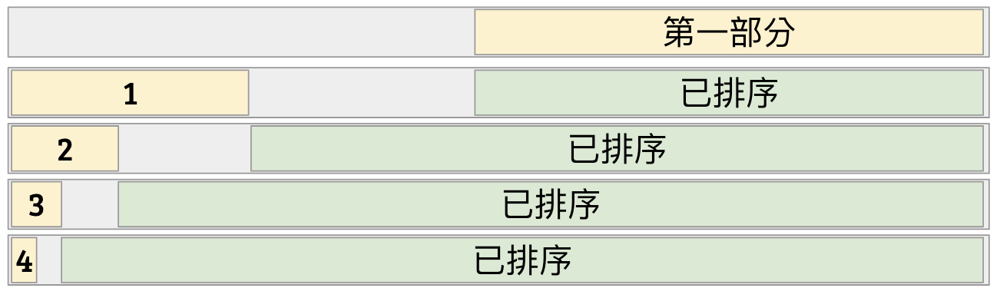

原地演算法
合併排序法有著許多優點： 時間複雜度勝過泡沫排序法、選擇排序法； 執行效能相較快速排序法更穩定一些； 記憶體存取相較於堆積排序法更連續一些； 甚至因為遞迴方式穩定，可以根據硬體特性特化出許多專門的晶片來處理小數列排序、平行排序等等，也可以讓編譯器預先優化。
當然，關心理論的你，可能會發現，在實作合併兩個排好序的陣列時，總是得開一塊新的記憶體空間，然後把資料騰過去1，然後合併完再騰寫回來。 感覺很浪費記憶體啊。 如果我們有辦法就地移動資料本身，不仰賴大量額外的記憶體的話，這類型的演算法通常被稱為原地演算法（In-Place Algorithms）。 最嚴格的原地演算法定義，是規定只能使用常數2數量的記憶體空間（用來存放註標、或某些計數器等等資料）。
性質 9
泡沫排序法、雞尾酒排序法、插入排序法、選擇排序法都是原地演算法。
要怎麼在沒有額外記憶體空間的情況下，做到合併功能呢？今天我們會介紹在 Stack overflow3 上面找到的、 Katajianen-Pasanen-Teuhola 4 把合併排序法和插入排序法融合起來，得到的原地排序演算法。其核心想法是由蘇聯數學家 Kronrod 在 1969 年提出的「從輸入陣列榨出暫存空間」的方法。
Kronrod 工作空間重疊大法
假設我們有兩塊相鄰的陣列區段 \(A\) 和 \(B\)，如下圖：
注意到 \(A\) 左邊有一塊可以暫時拿來當作暫存空間用的未排序區域，但如果它的長度比 \(|A\vert +\vert B\vert \) 來得小，很有可能在合併排序的過程中或覆蓋到 \(A\) 區域的資料。可能就會慘掉。
引理 10 (Kronrod)
Kronrod 注意到，假設 \(|A\vert \) 的長度比 \(|B\vert \) 短。如果我們將 \(A\) 搬到左邊，使得 \(A\) 與 \(B\) 之間空出 \(|A\vert \) 個暫存空間。 這個時候，我們就可以安心地使用這塊空間當作合併排序的暫存空間了！就算合併時碰到了原本屬於 \(B\) 區段的空間也沒有關係，因為可以保證不會重疊到 \(B\) 目前的工作區間。（證明略）
使用這個想法，我們可以得出像是 Katajainen-Pasanen-Teuhola 的原地演算法。
Katajainen-Pasanen-Teuhola 的原地類合併排序法
假設輸入的陣列為 \(A[0..n-1]\) 其中 \(n=2^k\)。這個排序演算法總共分成三個部分。
- 第一部分，首先我們排好整個陣列的後半部 \(A[\frac{n}{2}..n-1]\)。由於我們可以利用前半部當作暫存空間，所以不用擔心空間不夠。
- 第二部分，依序對於 \(\ell = k-2, k-3, \ldots, 0\)：
- 開始前我們知道 \(A[0..2^{\ell+1}-1]\) 是未排序部分、然後其他部分是已排序的。
- 我們試圖排序前 \(2^{\ell}\) 個元素、並且合併到排好序的 \(A[2^{\ell+1}..n-1]\) 部分。
- 排序時，可以利用中段作為暫存空間。
- 注意到中間的空位剛好有 \(2^{\ell}\) 格，因此可以使用引理 10 維護其合併的正確性。
- 合併完成後，未排序元素的位置恰好被換到 \(A[0..2^{\ell}-1]\)。可以接續下一個循環。
- 第三部分，把剩下一個元素 \(A[0]\) 使用插入排序法排入 \(A[1..n-1]\) 之中。

定理 11
KPT-類合併排序法的時間複雜度為 \(O(n\log n)\)、而且輸入陣列以外的空間複雜度為 \(O(1)\)。
證明
空間複雜度應該還滿…顯然的吧XD，我們來證明時間複雜度。
正常的合併排序時間複雜度是 \(O(n\log n)\)。因此第一部份的時間複雜度就是 \(O(\frac{n}{2}\log \frac{n}{2}) = O(n\log n)\)。 對於每個 \(\ell\)，第二部份會花 \(O(2^\ell\log 2^\ell)\) 時間進行合併排序、然後花費 \(\frac{n}{2} + 2^\ell = O(n)\) 的時間進行合併。 所以，第二部份的每一個迴圈 \(\ell\) 的時間複雜度是 \(O(n+2^\ell\log 2^\ell)\)。 全部加起來，就會得到
\[ \sum_{\ell=0}^{(\log n)-2} (n+2^{\ell}\log 2^\ell) \le n\log n + (2^0+2^1+\cdots + 2^{(\log n)-2})\log n = O(n\log n)\text{。} \]
第三部分時間複雜度是 \(O(n)\)。所以全部加起來是 \(O(n\log n)\)，得證。
後記
從 KPT-之後，大部分的論文朝向幾個方向發展。大家關心的分析重點有幾個方向：把時間複雜度分拆成「比較次數」加上「資料移動次數」。 比較次數雖然都是 \(O(n\log n)\)，但大家開始拼命壓前面的常數。而資料移動次數也有不同方法可以壓到 \(O(n\log n/ \log\log n)\)。 此外，我們其實利用的分而治之的概念，偷偷榨出了不少暫存空間。如果我們回歸到最原本的問題：合併兩個已排序的序列，是否真的能在線性時間做到不使用額外空間呢？答案是可以的，但我想今天就在此打住吧。有興趣的朋友可以參考這篇。
參考資料
- 清大韓永楷教授的 In-Place Algorithms 簡介投影片：http://www.cs.nthu.edu.tw/~wkhon/algo08-tutorials/tutorial1b.pdf
- 嘗試優化你的合併排序法（減少 Branch Prediction）：https://www.codeplay.com/portal/optimizing-sort-algorithms-for-the-ps3-part-2-merge
實作上如果資料本身很大，通常也可以對「註標」進行排序就好。這樣雖然可以避免搬移資料，但是在比較大小時會產生一些記憶體隨機存取的操作，可能會產生出很多 Cache Miss。 4: Practical In-Place Mergesort, J. Katajainen, T. Pasanen, and J. Teuhola, Nordic Journal of Computing 1996. 3: https://stackoverflow.com/questions/2571049/how-to-sort-in-place-using-the-merge-sort-algorithm 2: 這裡的「常數」要仰賴計算模型而定。一般來說為了支援隨機記憶體存取(RAM Model)，我們必須讓一單位的記憶體放得下對應資料的記憶體位址。也就是說，當輸入有 \(n\) 筆資料時，原地演算法允許我們使用 \(O(\log n)\)-bit 的額外記憶體空間。